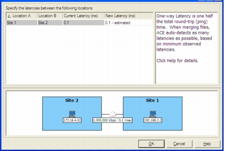

Edit Latencies Use the Edit Remote Latencies dialog box to edit the one-way latency—that is, half of the round-trip (ping) time. AppTransaction Xpert can auto-detect the one-way latency based on the underlying trace data. If you do not know the latency between segments, use PathProbe to measure the latency between the computer running AppTransaction Xpert and a specified agent. Figure 8-3 Edit Remote Latencies Dialog Box 